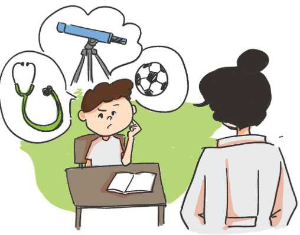

TEMATIKA 2: KARRIERA IME
3.KUR TË RRITEM DO TË BËHEM

- Dielli, çfarë dëshiron të bëhesh kur të rritesh? - e pyeti mësuesja.
- Unë dua të shkoj në hapësirë, pasi dua të eksploroj Hënën, yjet dhe planetët. Dua të njoh universin, prandaj do të bëhem astronaut. Unë i dua edhe kafshët, do të kujdesem dhe do t’i shëroj ato. Do të jem superheroi i tyre veteriner. Por mua më pëlqen shumë edhe futbolli dhe jam një lojtar i mirë! Më pëlqen shumë edhe të udhëtoj me aeroplan që të shoh botën! Pse mos të jem edhe një pilot! Ah, sa e vështirë qenka të zgjedhësh vetëm njërën!!!